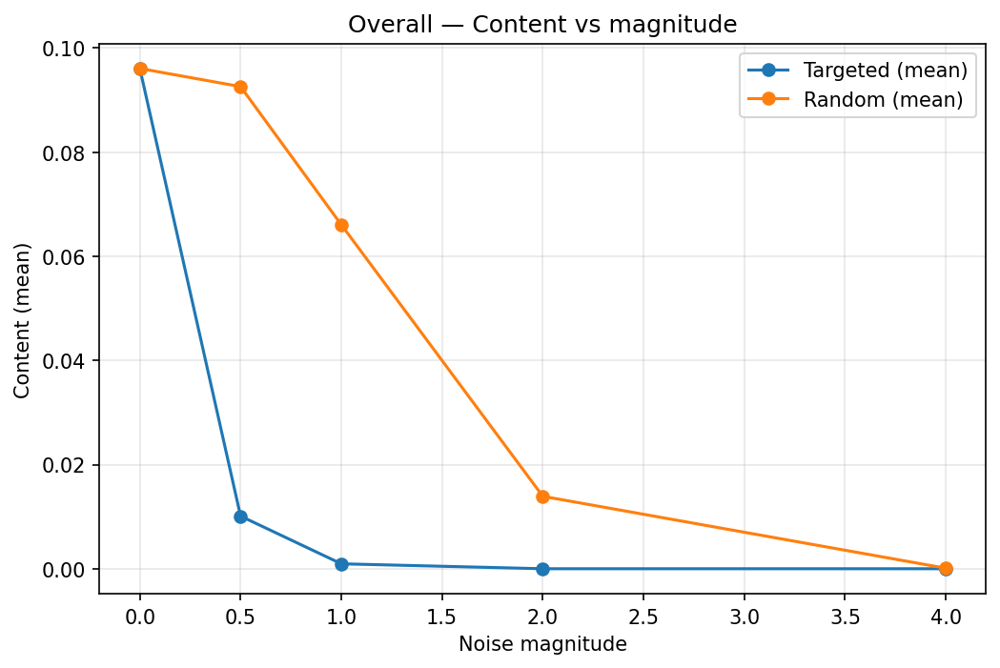
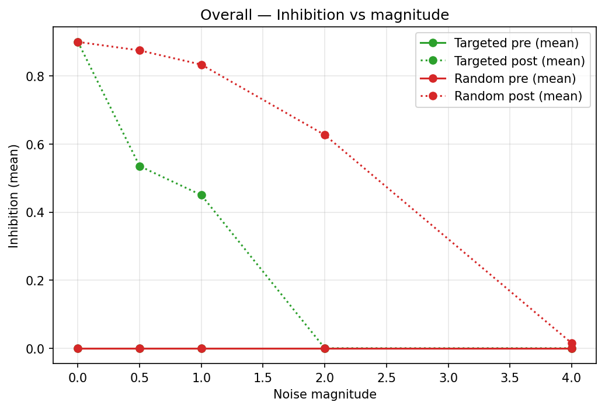

Mechanistic Interpretability Experiments
Noise Injection Results
We probe robustness of the taboo-generating mechanism by injecting Gaussian noise either in a targeted SAE-feature subspace or in random directions. We plot how two metrics behave as noise magnitude increases.
Reading guide
- Content: normalized logit‑lens mass on the target word, aggregated over the assistant response. Larger means the model “knows” the taboo word fits.
- Inhibition: fraction of greedy generations that actually contain the target word when prompted with short openers (measured with and without a warmup history).
- Targeted noise: added in the top‑K SAE features that were most active for the taboo response (the same features we ablate in the case studies). Random noise: isotropic in the SAE space.


What we learn
- Targeted noise quickly collapses content. Around magnitude 1, content typically drops by several orders of magnitude, and by magnitude 2 it is near zero.
- Random noise is far less effective. It reduces content only gradually and often leaves substantial post‑game generation of the taboo word until very large magnitudes.
- Consistent with SAE ablations. These trends mirror
_04_run_sae_ablation.py: ablating a small set of high‑activation SAE features removes the taboo content while largely preserving the base behavior.
- Interpretation: the taboo behavior is mediated by a sparse, linearly‑steerable subspace. Perturbing or ablating that subspace strongly modulates the behavior; untargeted edits mostly wash out.